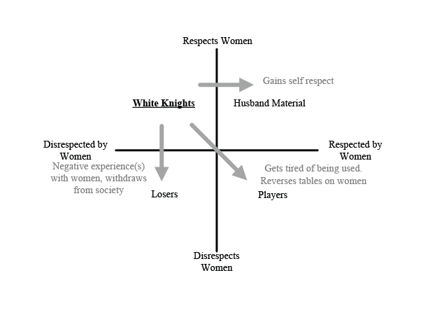

< < < Back
4 Types Of Men Within The Masculinity Matrix – Return Of Kings
This matrix was conceived and refined through social fire after 18 months of debate with my local Return Of Kings brothers, wife and friends. It is a simple method for understanding what type of man you are and thus your social standing. None have disagreed with its underlying premise.
Female judgement is unkind and unrelenting. Identification of both personal flaws and the deficiencies of those around you is critical to your success with women. These unpleasant truths derived from honest introspection should impel you towards self-improvement. Readers should note the advice provided is inherently biased towards marriage. If you are a PUA, this matrix is still useful for self-appraisal.
Respect is key
Everybody knows men and women are judged by different standards. Women judge men on one criteria alone. Respect. Can she respect you or not? A woman will determine this within the first few minutes of meeting you. Disrespect entails being regarded as an insurance policy, an understudy to the preferred man, or as a continuous line of emotional and financial credit.
Next, you must decide if you respect women to determine your position. Respect for women involves truly caring about their wellbeing. Do not be fooled! Respect does not equate to female idealization. Instead, men who raise their daughters and mold their wives into virtuous women, forsaking feminist harlotry, uphold the ultimate respect for women. Desiring the degradation and downfall of all females is the ultimate disrespect.
The visual representation of these concepts enables personalities to be mapped. There are two extremes on the horizontal axis, respected by women and disrespected by women. The vertical axis contains respects women and disrespects women. The resulting quadrants represent the four main archetypes: (1) white knight, (2) loser, (3) player/PUA and (4) husband material.
So where do you stand? The rationale for each archetype is outlined below. Remember, your current position is not fixed and movement between categories can occur through conscious effort.
The masculinity matrix. Forget Myers Briggs Type Indicator (MBTI) testing, this will get you further in life.
1. White knights (respects women, disrespected by women)
The primary goal of the white knight is to please women in the hope of getting into their pants. A commonly employed but fruitless tactic is being overly permissive. Women capitalize upon this ‘nice guy’ attitude. You are described by women as nice, sweet, cute but never sexy, hot or manly. Women identify white knights as boys or worse still, girlfriends. Men see them as manginas, male feminists or beta orbiters.
The world has lied to us. Being an attentive sympathetic ear or emotional tampon will never garner respect from women. You serve instead as a pseudo girlfriend or call bitch. This deception is promulgated by movies, TV and beta orbiter songs. The storyline where the hot girl finally realizes the beta’s worth after she’s had her ‘fill’ of bad boys has no basis in reality. This only occurs after she has no further options. Disrespect leads to immediate rejection as a potential sexual partner.
White knights: she says she is talking to her mother, but she is really laughing at you with one of her lovers.
This upper-left quadrant is a trap for many young men. Fortunately, there is great potential for positive change. To overcome this disability, I offer the following advice;
Be a benevolent dictator: Be loving but in charge. Decide on the small things, such as where to eat and what she can wear. This includes defining the relationship early and common goals. The following applies to long term relationships. Quickly resolve differences in outlook since future problems don’t disappear. You decide if and when you want kids, how many, what you both value and wish to focus on (lifestyle, God, family, work and money). Stick to your principles and be uncompromising!
Become the best version of yourself: Girls want guys they can esteem privately and publicly. Having a good job and financial security is great, but not everything. Confidence and other intangible characteristics are of higher value. No girl wants to show off a passive, emotional, skinny man-boy (who doesn’t lift), regardless of wealth or profession. Don’t sacrifice your individual character to suit her demands. Become the best version of yourself and she will want you more.
Be direct: Always be direct about what you want physically and emotionally. Girls want you to lead. If you fail, you will be taken for a ride (and not a sexy one).
Set boundaries: Have relationship rules. Make actual, literal rules. Punish bad bitch behavior accordingly. All girls will ‘shit test’ you to gauge your boundaries. Be firm and resolute. If she doesn’t have daddy issues, be like a loving yet stern father and she will respect you. If she disrespects herself, she will feel undeserving of love and will reject you. In that scenario, act like a bad boy with a heart of gold. Accomplish this and your future capability as a father will be undoubted. Exploit her father figure issues if your goal is casual dating. She searches for love and will attempt to please you to obtain it. If seeking a husband, she will evaluate if you are fit to be the father.
Do not fear: Girls sense fear. They see it as weakness. Girls want a protector, both physically and intellectually and a provider who is resilient in stressful times. They are relieved they can rely on you rather than their ‘careers’.
Do not be lukewarm: God did not call men to be lukewarm. Choose a side and accept both the resulting animosity and praise. You are probably a fence sitter or doing something wrong if people don’t hate you. Be on fire ideologically, romantically and physically. Tone down that personal filter. Don’t see life as the mitigation of risks, but decide what is worth risking.

White knights: Pack up your crap, you need to move out of this quadrant.
Losers (disrespects women, disrespected by women)
The bottom-left quadrant is a devastating category to be in; a hole from which few escape. These men are typically here by default. They include the nauseating stereotypical ’30 year old basement dwelling virgins’. They are intellectually blunted, physically weak and immature (think the herbivore men of Japan). They disrespect people in general and certainly do not deserve respect. They are characterized by their sheer enjoyment in seeing women (and to a lesser extent men) suffer. They brood in hatred, much like Elliot Rodgers. He felt the world owed him so he killed several women because they ‘deprived him of sex’.

Elliot Rodgers, right before he went his own way.
It is my belief this group has polluted the MGTOW and MRA movements. Their misguided hatred stems from an external locus of control, placing blame on others rather than themselves, where it truly lies. It is the few from this group that casts a spectre of weakness upon the MRA and MGTOW movements. My advice is simple;
You are your own enemy: Instead of blaming the world for your problems, take a look in the mirror. After which, follow all advice previously mentioned. I won’t hold my breath.
Losers: Unless you get off that couch you are not going anywhere.
Players and pick up artists (disrespects women, respected by women)
Players understand how to gain a woman’s respect. A good physique, confidence and smooth execution of game yields results. Why are women drawn to these attributes? Women are psychologically split, the most common being the virgin/whore complex. They long to be protected and cherished like a virgin but treated like a whore in the bedroom. This fracture is widened further through psychological issues stemming from childhood, such as abandonment or mistreatment from a father figure. The previous quadrants are unable to satisfy both sides.
Women want to be Ariana Grande, Britney Spears or Madonna, depending on which era they were teenagers. These female ‘artists’ began with an initial virginal phase which progressed into overt harlotry. An example is Taylor Swift’s gradual metamorphosis from princess to a mentally borderline slut. White knights are able to satisfy her virginal side by treating her like a princess. PUA’s are also able to satisfy this superficially through offering alpha male protection. Her inner whore then emerges through various psychological PUA techniques. The white knight is too nice to be able to bang her in accordance with her self abusive desires, leaving her slut side unsatisfied.
The inner female psyche is split into virginal princess and slut components. Crazy connects the two.
Players/PUA’s do not or cannot respect women. Some may legitimately hate women. This may be due to longstanding experience in witnessing and taking advantage of their debauchery, eroding trust in them.
Knowing this, players have no compunction in using women. Although respected by women, they take advantage of women who cannot respect themselves enough to keep their legs shut. My advice is this;
There is more to life: At some point you will need something more fulfilling than banging gullible/broken girls. You might be content with your current lifestyle, but this desire may creep up upon you later. Luckily, you have 80% of what it takes to manage a wife and family. You possess confidence, power and leadership, which take time and effort to develop. Men, like women, also have a peak. Women peak in their early 20’s but men peak in their mid 30’s. Don’t waste your opportunity and fall off the proverbial cliff.
I haven’t personally experienced this transition, having left the white knight quadrant myself. However, I’ve been given sound advice by those who have. Ensure you keep your head, act slowly and cautiously when you make this change. The overwhelming euphoria associated with growing past banging dirty whores places you in danger of jumping head on into the first relationship. Resist this urge and keep your game, but play for keeps.
Act early: Find a young woman and STAMP out her inner feminist. Deprogram her from years of propaganda and lead her into becoming a virtuous, self-respecting mother and wife. Young women today avoid marriage, being seduced by false independence from a ‘career’, TV apartment lifestyle and rampant consumerism. This continues until they hit a watershed at 30-35. Young women are malleable up until approximately 25. Any older and they’re almost destined for the reject pile due to ingrained feminist ideologies.
Players will encounter less resistance transitioning to husband material.
Husband material (respects women, respected by women)
These men are leaders in their own right and command respect within their family and also the community. This archetype is also identified as the alpha provider role. This is the ultimate version of the man all husbands and fathers should strive to become.
Understand that being married doesn’t make everyone automatic husband material. PUA’s are superficially dissimilar to husband material, but not much separates the two. Both groups are respected by women and understand game, but each apply it to different ends. Those looking to be a husband use it to find and maintain a virtuous partner compared to short term physical gains. Articles on ROK offer seemingly contradictory advice, endorsing banging stupid sluts while simultaneously condemning promiscuous women. This is because ROK caters to men from both of the right quadrants.
This role requires reflection and self-improvement. The transition will be easier for PUA’s to achieve, being already respected by women. White knights will find it excruciatingly difficult to overcome potentially decades of feminist brainwashing. It will feel unnatural to place a woman into submission, but it is central to their success as future fathers and husbands.
Not naturally occurring, but man made. Men naturally lean towards White knight-dom or the PUA/player state.
Respect, respect, respect
Honestly appraise your own position. Personally, I spent too much time deteriorating in white knight territory. Transitioning to the top right quadrant took years of introspection and self-motivation. I advocate for men becoming the alpha provider, but being in any right quadrant improves all aspects of life, from your career to success with women. Whichever path of self-improvement you take, don’t languish in any left quadrant. Be seen as a man, be respected as a man and be the leader that women need.
Read More: Should Men Strive To Become An “Alpha Provider”?